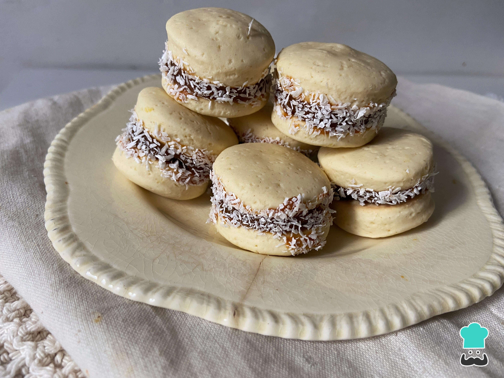

Alfajores de Maicena

Description
Alfajores de Maicena are delicate sandwich cookies filled with dulce de leche and rolled in shredded coconut. They are a beloved treat in Argentina.
Ingredients
- 200 g butter
- 150 g sugar
- 2 egg yolks
- 1 teaspoon vanilla extract
- 200 g all-purpose flour
- 300 g cornstarch (corn flour)
- 1 teaspoon baking powder
- 1 pinch of salt
- Dulce de leche
- Shredded coconut
Steps
- Cream the butter with the sugar until light and fluffy.
- Add the egg yolks and vanilla extract, and beat well.
- Mix in the flour, cornstarch, baking powder, and salt until a soft dough forms.
- Roll out the dough on a floured surface and cut into circles.
- Place on a baking sheet and bake at 180°C (356°F) for 10-12 minutes.
- Once cooled, sandwich the cookies with dulce de leche and roll the edges in shredded coconut.